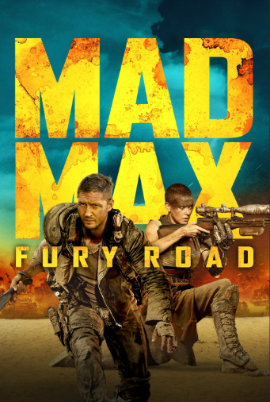

Mad Max Fury Road (2015)
Réalisateur : George Miller
Résumé court
Furiosa s'échappe avec les épouses d'Immortan Joe dans un monde post-apocalyptique impitoyable.
Critique
100% action pure ! Cascades réelles folles, Charlize Theron magistrale, rythme effréné. 6 Oscars techniques mérités. Film du siècle !
Synopsis détaillé
Dans un futur post-apocalyptique, Max Rockatansky est capturé par les War Boys, fanatiques du culte d'Immortan Joe qui contrôle Citadel, forteresse fournissant l'eau. L'Imperatrice Furiosa, conductrice d'un War Rig, détourne son convoi avec les cinq "Épouses" fertiles de Joe vers un Green Place mythique. Quand Joe découvre la trahison et lance ses hordes à sa poursuite, Max devient l'allié forcé de Furiosa dans une course-poursuite effrénée à travers le désert hostile.
Casting principal
- Tom Hardy : Max Rockatansky
- Charlize Theron : Imperatrice Furiosa
- Nicholas Hoult : Nux
- Hugh Keays-Byrne : Immortan Joe
Fiche technique
- Genre : Action, Science-fiction, Post-apo
- Réalisateur : George Miller
- Producteurs : George Miller, Doug Mitchell
- Durée : 2h00